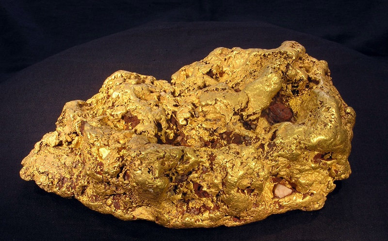
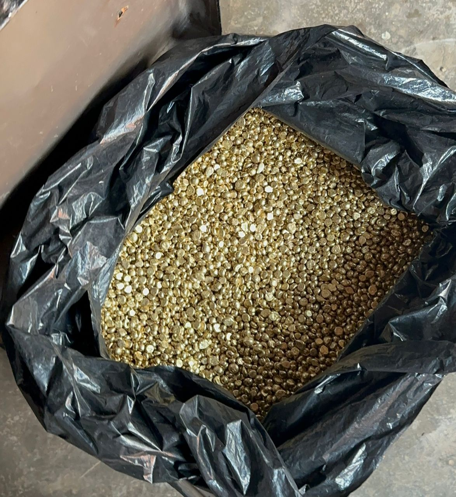

Uganda's Most Trusted
Precious Metal Trading Company
Huanqiu Precious Metal delivers certified, precise gold testing and precious metals analysis trusted by miners, traders, and exporters across East Africa.
DAILY REFINING CAPACITY
COUNTRIES SERVED
YEARS EXPERIENCE
CLIENTS SERVED
Precious Metal Trading
You Can Trust
HUANQIU PRECIOUS METAL is East Africa's leading gold precious metal trading company, providing certified precious metals testing to miners, exporters, jewellers, and investors across the region.
Our facility uses internationally recognised methodologies — Fire Assay, XRF, and ICP spectrometry — delivering results that meet global standards for gold trade and export documentation.
Licensed & Regulated
Fully licensed under Uganda's Ministry of Energy and Mineral Development.
Confidential & Secure
Strict chain-of-custody and full confidentiality for all samples and results.
24–48 Hour Turnaround
Results in 24–48 hours, with expedited same-day service available.
Every Piece of Gold Has a Story of Hope & Transformation
Our Mission
The gold we trade comes from the hands of hardworking men and women in poverty-stricken communities across East Africa. These are not just miners — they are mothers, fathers, and dreamers working to build better lives for their families.
We believe that the true value of gold lies not in its market price, but in the lives it touches. That's why we've made it our mission to sensitize, support, and empower these communities by connecting their raw materials directly to final consumers — ensuring they earn a dignified living from their labor.
Our Commitment:
- 100% ethically sourced gold
- Fair trade practices with no exploitation
- Direct support to mining communities

Local mining community
Supporting over 500 families through ethical trade
From Villages to Global Markets
We travel to remote villages across East Africa, working directly with artisanal miners who have been mining gold for generations. These communities often lack access to fair markets and are exploited by middlemen.
Empowerment Through Education
We conduct workshops teaching miners about sustainable mining practices, safety protocols, and financial literacy. Knowledge is power, and we ensure our partners have the tools they need to succeed.
Fair Compensation
By linking raw materials directly to final consumers, we eliminate exploitative middlemen. Miners receive 30-40% more than traditional market rates, allowing them to support their families and invest in their communities.
Community Development
A portion of every transaction goes back to community projects — building schools, funding healthcare, and providing clean water access. Your purchase directly transforms lives.
"When you choose Huanqiu Precious Metal, you're not just buying gold — you're investing in communities, supporting families, and helping build a future where every miner earns a fair and dignified living."
From the Earth, With Their Hands
Every ounce of gold begins its journey in the hands of hardworking local miners, using traditional methods passed down through generations. This is their story.
Artisanal Gold Mining in Rural Areas
Watch as local miners work from dawn to dusk, using traditional methods that have been practiced for generations.
The Heartbeat of Our Gold
In the rolling hills of rural areas, before the sun paints the sky with orange and gold, miners begin their daily journey. Armed with picks, shovels, and generations of knowledge, they descend into pits carved by hand — some as deep as 30 meters into the earth.
This is not industrial mining with heavy machinery. This is artisanal mining at its purest — where every stone is turned by hand, every bucket of earth is hauled with muscle and sweat, and every speck of gold is earned through sheer determination.
Women and men work side by side, their hands calloused from years of labor. They know the earth intimately — understanding which layers hold promise, which streams carry traces of gold, and which rocks might hide precious particles within.
"This gold comes from the sweat of honest labor. Each speck tells a story of a family's hope, a child's education, a dream for a better tomorrow."
— Local Mining Elder
The Traditional Process
- 1.Excavation: Miners dig vertical pits using hand tools, reinforcing walls with timber.
- 2.Ore Extraction: Gold-bearing ore is carefully extracted and sorted by hand.
- 3.Crushing: Rocks are manually crushed using hammers to release gold particles.
- 4.Washing: The crushed material is washed in streams, where gold settles due to its weight.
- 5.Collection: Fine gold particles are collected using mercury-free methods.
From Earth to Market: The Journey
Artisanal Excavation
Local miners dig deep into the earth using traditional tools — picks, shovels, and their own hands. Each hole tells a story of dedication and hope.
Ore Collection & Washing
Gold-bearing ore is carefully collected and washed in nearby streams. The rhythmic motion of washing pans separates heavier gold particles from lighter materials.
Crushing & Processing
Using hammers and manual crushers, miners break down rocks to release precious gold particles. This labor-intensive process requires skill and patience.
Fair Trade Collection
We collect the processed gold directly from miners, ensuring they receive fair compensation without exploitative middlemen.
Voices from the Community
Sarah Namukasa
Artisanal Miner, 8 years
"Before working with Huanqiu, I struggled to feed my three children. Now, I earn a fair wage and can send them to school. This partnership changed our lives."
James Okello
Community Mining Leader
"We used to sell to middlemen who cheated us. Now we have dignity, fair prices, and our whole community is thriving. Huanqiu treats us like family."
Ethical Sourcing
Direct trade with miners ensures fair compensation
Sustainable Livelihoods
Empowering communities through fair wages
Traditional Methods
Preserving heritage while ensuring quality
When you choose our gold, you're not just purchasing a precious metal — you're honoring the hands that unearthed it, supporting families, and investing in communities that have been mining for generations.
The Complete Journey of African Gold
Experience the transformation from raw earth to refined precious metal. Watch our miners extract gold from deep pits, then follow it to our state-of-the-art laboratory where it's smelted into pure gold.
Artisanal Gold Mining Pit
Miners extracting gold-bearing ore from deep earth using traditional methods
The Extraction Pit
Deep in the heart of rural areas, miners work tirelessly, digging up to 30 meters below ground to extract gold-bearing ore. Using traditional tools passed down through generations, they carefully excavate the earth, preserving the integrity of the mineral.
Gold Smelting & Refining Laboratory
Transforming raw gold ore into pure, refined precious metal
Laboratory Smelting
At our certified laboratory, raw gold ore undergoes precise smelting and refining processes. Using advanced techniques including fire assay and induction smelting, we transform earth-extracted materials into pure, investment-grade gold ready for global markets.
The Transformation Process
Extraction
Manual mining from deep pits
Crushing
Breaking down ore
Smelting
High-temperature refining
Pure Gold
99.9% pure gold
Mining Depth
Miners dig up to 30 meters below ground
Smelting Temperature
High-temperature refining process
Purity Achieved
Investment-grade pure gold
From the depths of African soil to the precision of our laboratory — every piece of gold tells a story of craftsmanship, tradition, and quality. Witness the transformation yourself.